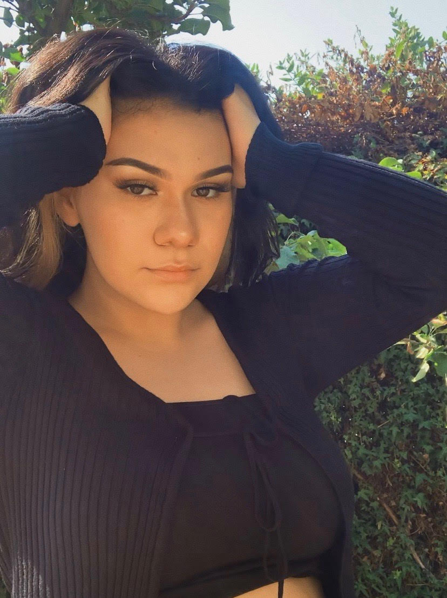

Jocelyn Cervantes
cute lil pic of me:
Hi! My name is Jocelyn Cervantes. Im currently a freshmen at SJSU as a Interior Design Major. This is my protfolio for Art-74. I hope you enjoy looking at some of the stuff I have created in the past 3 years.
« something extra »
dont be shy, press the link
My ~personal~ favorites:
Glitch Image
"Beauty in error", Sep 15, 2020

Original art work by: Mishu Aguilera, @13000Mushu via twitter
This art piece features a picture that has its code altered, making a type of glitch appear. It was done as an assignment for my current Art-74 class at SJSU. The first step was to open up the code of an image and, well for me at least, I went in and delteded, added and changed the code randomly. Once I got the general desired effect I brought it into a separate app called Audacity which is for audio. After applying the photo to fit their format I was able to add effect to the “sound” of the photo and the end project was a new effect on the glitched image which in this case was the inverted color on the distort as well as a the colorful grain in the back.
Sam and her Care Bears
"Jocelyn can you make me something for my instagram?", Sep 18, 2020
This is my friend Samantha Orellana, @asdfghjklsssam on instagram.
I did this using photoshop. To do this I had created a general background, then I added the images and masked them. After I cleaned them up and placed them where they fitted best the only thing I added to Sam was enhancing effects like smoothing and highlighting/contouring. The care bears were added by her request and I evened them out to fit the filter used in her photo. A goal I had here was for her to be satisfied with the piece for her to post on social media, which she did end up doing so that goal was met and completed.